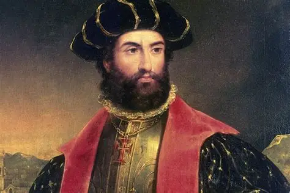
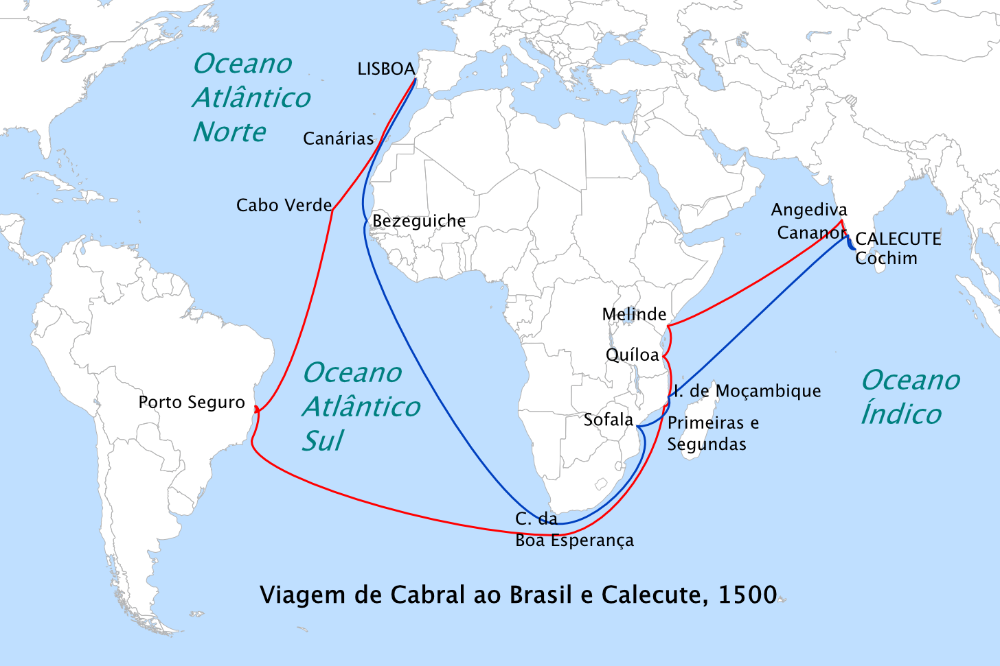

Pedro Álvares Cabral
Lo scopritore del Brasile nel 1500

1467 - 1520 | Esploratore portoghese che scoprì il Brasile nel 1500
I Numeri dell'Impresa
Le Fasi della Spedizione
🚢 La Grande Partenza
Cabral partì da Lisbona il 9 marzo 1500 con 13 navi e circa 1500 uomini. Era la spedizione più grande mai inviata dal Portogallo. L'obiettivo ufficiale era raggiungere l'India seguendo la rotta di Vasco da Gama.
Perché la flotta era così grande?
- 13 navi: la più grande flotta portoghese mai assemblata
- 1500 uomini: marinai, soldati e sacerdoti
- Obiettivo doppio: commerciare spezie in India e fondare colonie
Re Manuele I: Il re del Portogallo scelse Cabral come comandante della spedizione.
🌴 La Scoperta del Brasile
Il 22 aprile 1500, Cabral avvistò la costa del Brasile. Inizialmente battezzò la nuova terra come "Isola di Vera Cruz" e poi "Terra di Santa Cruz". Prese possesso della terra in nome del Portogallo.
Cosa fece Cabral in Brasile?
- Atterraggio: sbarcò sulla costa e dichiarò la terra portoghese
- Primo contatto: incontrò le popolazioni indigene Tupi
- Lettera di Caminha: il segretario Pero Vaz de Caminha scrisse una lettera dettagliata al re
La Lettera di Caminha: documento storico che descrive per la prima volta il Brasile.
⚓ La Rotta per l'India
Dopo il Brasile, Cabral ripartì verso l'India, ma 4 navi affondarono durante la traversata dell'Atlantico meridionale. Arrivato a Calicut, fu accolto dal rajà, ma un incidente portò a uno scontro che causò la morte di 70 portoghesi.
Cosa successe in India?
- Calicut: Cabral fu accolto dal rajà, ma gli arabi lo ostacolarono
- Scontro: 70 portoghesi morirono in un attacco
- Rappresaglia: Cabral bombardò la città e affondò navi arabe
- Base commerciale: fondò una base a Cochin
Ritorno: Solo 7 navi su 13 tornarono in Portogallo nel 1501, ma con un ricco carico di spezie.
🗺️ La Rotta di Cabral

Come avvenne la scoperta del Brasile?
La scoperta del Brasile nel 1500 è stata oggetto di dibattito: alcuni storici credono che Cabral sia stato deviato dalle correnti oceaniche, altri che il Portogallo sapesse già dell'esistenza di terre a ovest grazie al Trattato di Tordesillas (1494). In ogni caso, Cabral fu il primo europeo a dichiarare ufficialmente la scoperta del Brasile in nome del Portogallo.
Curiosità
- Il Brasile inizialmente fu chiamato "Isola di Vera Cruz" perché si credeva fosse un'isola
- La spedizione perse 6 navi: 4 in mare e 2 durante la navigazione verso l'India
- Pedro Vaz de Caminha scrisse la prima descrizione scritta del Brasile
Pero Vaz de Caminha: Il segretario della spedizione che scrisse la famosa "Lettera di Caminha".
Nicolau Coelho: Uno dei capitani che aveva già viaggiato con Vasco da Gama.
Bartolomeu Dias: Il famoso esploratore che accompagnò Cabral ma morì durante la tempesta al Capo di Buona Speranza.
La scoperta di Cabral aprì la strada alla colonizzazione del Brasile da parte del Portogallo. Il paese rimase una colonia portoghese per oltre 300 anni fino al 1822. Oggi il Brasile è l'unico paese dell'America Latina dove si parla portoghese.
📖 Ripassa Prima del Quiz!
Leggi attentamente queste informazioni e prova a rispondere alle domande
👤 Chi era Pedro Álvares Cabral?
📍 Domanda 1: Quando e dove nacque?
Risposta: Intorno al 1467 a Belmonte, in Portogallo.
📍 Domanda 2: Che famiglia aveva?
Risposta: Famiglia nobile portoghese con legami con la corte reale.
📍 Domanda 3: Perché fu scelto per la spedizione?
Risposta: Re Manuele I lo scelse come comandante, forse perché sapeva che la rotta avrebbe potuto portare alla scoperta di nuove terre.
📍 Domanda 4: Quando e dove morì?
Risposta: Intorno al 1520 in Portogallo, in povertà e dimenticato.
🚢 La Grande Spedizione del 1500
📍 Domanda 5: Quando partì Cabral e con quante navi?
Risposta: 9 marzo 1500 con 13 navi e 1500 uomini.
📍 Domanda 6: Qual era l'obiettivo della spedizione?
Risposta: Raggiungere l'India seguendo la rotta di Vasco da Gama.
🌴 La Scoperta del Brasile
📍 Domanda 7: Quando avvenne la scoperta?
Risposta: 22 aprile 1500.
📍 Domanda 8: Come chiamò la nuova terra?
Risposta: "Isola di Vera Cruz", poi "Terra di Santa Cruz".
📍 Domanda 9: Cos'è la Lettera di Caminha?
Risposta: La prima descrizione scritta del Brasile.
⚓ La Rotta per l'India
📍 Domanda 10: Quante navi perse Cabral in mare?
Risposta: 4 navi affondarono durante una tempesta.
📍 Domanda 11: Cosa successe a Calicut?
Risposta: Un attacco uccise 70 portoghesi, Cabral bombardò la città in rappresaglia.
📍 Domanda 12: Quante navi tornarono in Portogallo?
Risposta: Solo 7 su 13.
📚 Fonti Consultate
- Treccani - Enciclopedia Italiana
- Geopop - Approfondimenti
- Focus Junior - Spiegazioni per ragazzi
- Libro di storia - Contesto storico